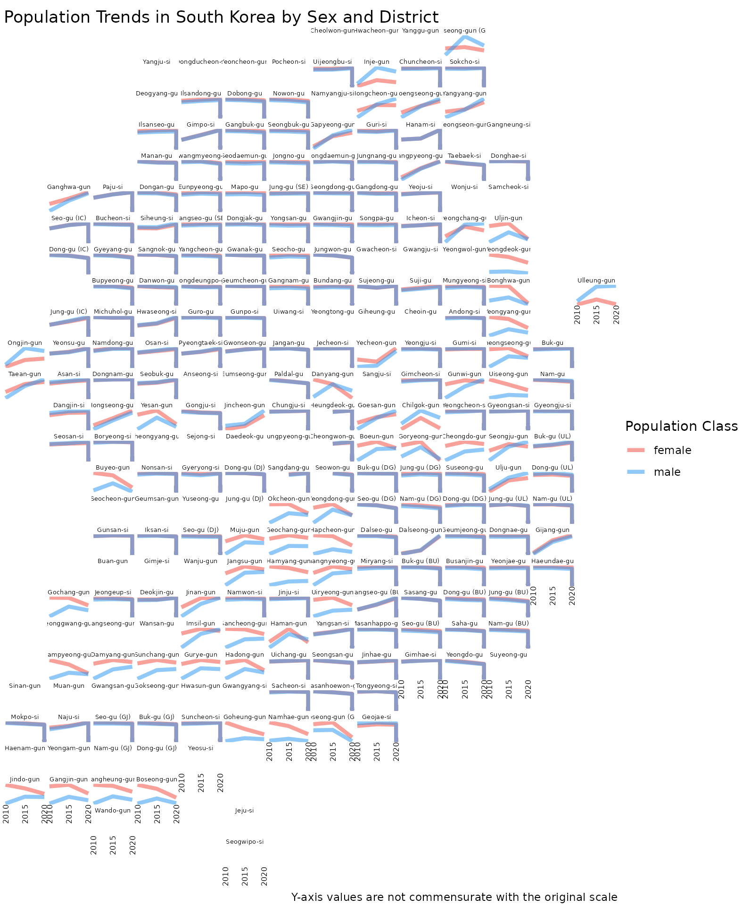

Analytics Gallery with tidycensuskr
April 28, 2026
Source:vignettes/v03_gallery.Rmd
v03_gallery.RmdExample 1: Spatial autocorrelation of economic activity in South Korea
Design idea
In this example, we use Moran’s I statistics to analyze the spatial distribution of economic activity (measured by the number of registered companies) across South Korea in 2020.
- Global Moran’s I evaluates whether there is overall spatial autocorrelation, i.e., whether areas with similar company counts tend to cluster together nationwide.
- Local Moran’s I (LISA) identifies local clusters and outliers by
classifying each district into four types:
- High-High (H-H): districts with high values surrounded by other high-value districts.
- Low-Low (L-L): districts with low values surrounded by other low-value districts.
- High-Low (H-L): potential spatial outliers with high values surrounded by low-value neighbors.
- Low-High (L-H): potential spatial outliers with low values surrounded by high-value neighbors.
The resulting LISA cluster map highlights where economic activities are concentrated and where they are sparse relative to neighboring areas.
Data prep
# Load 2020 boundaries
data(adm2_sf_2020)
# Load 2020 economy data
df_2020_economy <- anycensus(year = 2020,
type = "economy")
# Merge with spatial data
adm2_sf_2020_economy <- adm2_sf_2020 |>
dplyr::inner_join(df_2020_economy, by = "adm2_code")
# Variable of interest: number of companies
var <- adm2_sf_2020_economy$company_total_cntGlobal Moran’s I
# Build neighbors (queen contiguity) and spatial weights
nb <- poly2nb(adm2_sf_2020_economy, queen = TRUE)
lw <- nb2listw(nb, style = "W", zero.policy = TRUE)
# Global Moran's I test
global_moran <- moran.test(var, lw, zero.policy = TRUE)
global_moran##
## Moran I test under randomisation
##
## data: var
## weights: lw
## n reduced by no-neighbour observations
##
## Moran I statistic standard deviate = 10.35, p-value < 2.2e-16
## alternative hypothesis: greater
## sample estimates:
## Moran I statistic Expectation Variance
## 0.424571643 -0.004149378 0.001715960Local Moran’s I and LISA map
# Local Moran's I
local_moran <- localmoran(var, lw, zero.policy = TRUE)
# Bind results back to sf object
adm2_sf_2020_economy <- adm2_sf_2020_economy |>
mutate(
Ii = local_moran[, "Ii"],
pval = local_moran[, "Pr(z != E(Ii))"]
)
mean_var <- mean(var, na.rm = TRUE)
adm2_sf_2020_economy <- adm2_sf_2020_economy |>
mutate(
cluster = case_when(
var > mean_var & Ii > 0 & pval <= 0.05 ~ "High-High",
var < mean_var & Ii > 0 & pval <= 0.05 ~ "Low-Low",
var > mean_var & Ii < 0 & pval <= 0.05 ~ "High-Low",
var < mean_var & Ii < 0 & pval <= 0.05 ~ "Low-High",
TRUE ~ "Not significant"
)
)
ggplot(adm2_sf_2020_economy) +
geom_sf(aes(fill = cluster), color = "grey70", size = 0.05) +
scale_fill_manual(
values = c(
"High-High" = "red",
"Low-Low" = "blue",
"High-Low" = "pink",
"Low-High" = "lightblue",
"Not significant" = "white"
)
) +
labs(title = "LISA Cluster Map of Company units (2020)") +
theme_minimal()
The results reveal a strong metropolitan concentration of economic activity. High-High (H-H) clusters are predominantly located in the Seoul Metropolitan Area, reflecting its central role in South Korea’s economy. Low-Low (L-L) clusters appear in Gangwon Province and along the borders of Jeollabuk-do, Jeollanam-do, Gyeongsangbuk-do, and Chungcheongnam-do, indicating regions with consistently low levels of company presence. This spatial pattern highlights the dominance of the capital region in economic activity and the relative sparsity of industrial and business units in peripheral provinces.
Example 2: Population change by sex and districts
Design idea
- Load
censuskorbundled intidycensuskr, focusing on population counts by sex at the adm2 level - Clean and align administrative codes to account for district name changes, promotions, and boundary adjustments over time
- Convert population counts into comparable units (thousands) and retain the most recent district names for consistent labeling
- Prepare a
geofacetgrid based on 2020 administrative boundaries - Plot population trends over time separately for males and females using line charts
# load packages
library(geofacet)
# load bundled data in tidycensuskr
data(censuskor)
data(adm2_sf_2020)
data(kr_grid_adm2_sgis_2020)
# prepare geofacet grid data
# Use the newest adm2_code and name if one got its name changed or promoted
pop <- censuskor |>
dplyr::filter(
type == "population" & class1 == "all households"
) |>
dplyr::rename(code = adm2_code) |>
dplyr::filter(class1 == "all households", class2 != "total") |>
dplyr::mutate(
value = value / 1000,
code = dplyr::case_when(
# Michuhol-gu (i.e., 23030 to 23090)
code == 23030 ~ 23090,
# Yeoju-si
code == 31320 ~ 31280,
# Dangjin-si
code == 34390 ~ 34080,
TRUE ~ code
)
) |>
dplyr::arrange(code, class2, -year) |>
dplyr::group_by(code) |>
dplyr::mutate(adm2 = adm2[which.max(year)]) |>
dplyr::ungroup()
head(pop)## # A tibble: 6 × 10
## year adm1 adm1_code adm2 code type class1 class2 unit value
## <dbl> <chr> <dbl> <chr> <dbl> <chr> <chr> <chr> <chr> <dbl>
## 1 2020 Seoul 11 Jongno-gu 11010 population all house… female pers… 72.6
## 2 2015 Seoul 11 Jongno-gu 11010 population all house… female pers… 73.8
## 3 2010 Seoul 11 Jongno-gu 11010 population all house… female pers… 76.5
## 4 2020 Seoul 11 Jongno-gu 11010 population all house… male pers… 67.3
## 5 2015 Seoul 11 Jongno-gu 11010 population all house… male pers… 69.5
## 6 2010 Seoul 11 Jongno-gu 11010 population all house… male pers… 71.3
# for a geofacet plot
# map codes to district names for facet labels
pop_name_map <- pop %>%
dplyr::distinct(code, adm2) %>%
{ setNames(.$adm2, .$code) }
pop_labels <- pop %>% dplyr::distinct(code, adm2)
# Adjust for the identical district names in different provinces
kr_grid_adm2_sgis_2020 <-
kr_grid_adm2_sgis_2020 |>
dplyr::mutate(
name = dplyr::case_when(
grepl("^32", code) & name == "Goseong-gun" ~ "Goseong-gun (GW)",
grepl("^38", code) & name == "Goseong-gun" ~ "Goseong-gun (GN)",
grepl("^11", code) & name == "Jung-gu" ~ "Jung-gu (SE)",
grepl("^21", code) & name == "Jung-gu" ~ "Jung-gu (BU)",
grepl("^22", code) & name == "Jung-gu" ~ "Jung-gu (DG)",
grepl("^23", code) & name == "Jung-gu" ~ "Jung-gu (IC)",
grepl("^25", code) & name == "Jung-gu" ~ "Jung-gu (DJ)",
grepl("^26", code) & name == "Jung-gu" ~ "Jung-gu (UL)",
grepl("^21", code) & name == "Seo-gu" ~ "Seo-gu (BU)",
grepl("^22", code) & name == "Seo-gu" ~ "Seo-gu (DG)",
grepl("^23", code) & name == "Seo-gu" ~ "Seo-gu (IC)",
grepl("^24", code) & name == "Seo-gu" ~ "Seo-gu (GJ)",
grepl("^25", code) & name == "Seo-gu" ~ "Seo-gu (DJ)",
grepl("^26", code) & name == "Seo-gu" ~ "Seo-gu (UL)",
grepl("^21", code) & name == "Nam-gu" ~ "Nam-gu (BU)",
grepl("^22", code) & name == "Nam-gu" ~ "Nam-gu (DG)",
grepl("^24", code) & name == "Nam-gu" ~ "Nam-gu (GJ)",
grepl("^26", code) & name == "Nam-gu" ~ "Nam-gu (UL)",
grepl("^21", code) & name == "Dong-gu" ~ "Dong-gu (BU)",
grepl("^22", code) & name == "Dong-gu" ~ "Dong-gu (DG)",
grepl("^23", code) & name == "Dong-gu" ~ "Dong-gu (IC)",
grepl("^24", code) & name == "Dong-gu" ~ "Dong-gu (GJ)",
grepl("^25", code) & name == "Dong-gu" ~ "Dong-gu (DJ)",
grepl("^26", code) & name == "Dong-gu" ~ "Dong-gu (UL)",
grepl("^21", code) & name == "Buk-gu" ~ "Buk-gu (BU)",
grepl("^22", code) & name == "Buk-gu" ~ "Buk-gu (DG)",
grepl("^24", code) & name == "Buk-gu" ~ "Buk-gu (GJ)",
grepl("^26", code) & name == "Buk-gu" ~ "Buk-gu (UL)",
grepl("^11", code) & name == "Gangseo-gu" ~ "Gangseo-gu (SE)",
grepl("^21", code) & name == "Gangseo-gu" ~ "Gangseo-gu (BU)",
TRUE ~ name
)
)Small multiples
This design highlights heterogeneous local population trajectories while preserving a sense of national spatial structure.
ggplot(data = pop) +
geom_line(
aes(x = year, y = value, group = interaction(adm2, class2), color = class2),
alpha = 0.5,
linewidth = 1.5
) +
facet_geo(~ code, grid = kr_grid_adm2_sgis_2020, label = "name", scale = "free_y") +
labs(
title = "Population Trends in South Korea by Sex and District",
x = "Year",
y = "",
color = "Population Class",
caption = "Y-axis values are not commensurate with the original scale"
) +
scale_color_manual(values = c(female = "#F44336", male = "#2196F3")) +
theme_void() +
scale_x_continuous(
breaks = sort(unique(pop$year)),
labels = function(x) sprintf("%d", as.integer(x))
) +
theme(
strip.text = element_text(
size = 5,
margin = margin(0.05, 0.05, 0.05, 0.05, "cm")
),
strip.background = element_blank(),
axis.text.x = element_text(size = 6, angle = 90, hjust = 1),
axis.text.y = element_blank(),
panel.spacing = grid::unit(1, "pt"),
plot.margin = margin(1, 1, 1, 1, "mm")
)